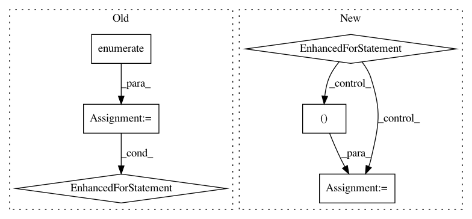

fd8ca0c975e380dfcd7239408258b5852be33f06,niftynet/engine/sampler_grid.py,GridSampler,layer_op,#GridSampler#,54
Before Change
// fill output window array
image_array = output_dict[
self.window.image_data_placeholder(name)]
for (i, location) in enumerate(location_array[:, 1:]):
x_, y_, z_, _x, _y, _z = location
try:
image_array[i, ...] = \
data[name][x_:_x, y_:_y, z_:_z, ...]
except ValueError:
tf.logging.fatal(
"dimensionality miss match in input volumes, "
"please specify spatial_window_size with a "
"3D tuple and make sure each element is "
"smaller than the image length in each dim.")
raise
yield output_dict
def rand_spatial_coordinates(subject_id, img_sizes, win_sizes, n_samples):
After Change
coordinates = grid_spatial_coordinates(
image_id, image_shapes, static_window_shapes, self.border_size)
n_locations = coordinates.values()[0].shape[0]
for i in range(n_locations):
// Â initialise output dict
output_dict = {}
for name in list(data):
assert coordinates[name].shape[0] == n_locations, \
"different number of grid samples from the input" \
"images, don"t know how to combine them in the queue"
x_, y_, z_, _x, _y, _z = coordinates[name][i, 1:]
try:
image_window = data[name][x_:_x, y_:_y, z_:_z, ...]
except ValueError:
tf.logging.fatal(
"dimensionality miss match in input volumes, "
"please specify spatial_window_size with a "
"3D tuple and make sure each element is "
"smaller than the image length in each dim.")
raise
// fill output dict with data
coordinates_key = self.window.coordinates_placeholder(name)
image_data_key = self.window.image_data_placeholder(name)
output_dict[coordinates_key] = coordinates[name][[i], ...]
output_dict[image_data_key] = image_window[np.newaxis, ...]
yield output_dict
def grid_spatial_coordinates(subject_id, img_sizes, win_sizes, border_size):
This function generates all coordinates of feasible windows, with
step sizes specified in grid_size parameter
In pattern: SUPERPATTERN
Frequency: 3
Non-data size: 6
Instances
Project Name: NifTK/NiftyNet
Commit Name: fd8ca0c975e380dfcd7239408258b5852be33f06
Time: 2017-08-12
Author: wenqi.li@ucl.ac.uk
File Name: niftynet/engine/sampler_grid.py
Class Name: GridSampler
Method Name: layer_op
Project Name: keras-team/keras
Commit Name: c3e844e7063efc14f6a8364cc04df4526b57352e
Time: 2018-01-11
Author: ozabluda@gmail.com
File Name: tests/keras/utils/generic_utils_test.py
Class Name:
Method Name: test_progbar
Project Name: chainer/chainercv
Commit Name: 827e12f3b9506e0f78cc79445441cd9d1f25c055
Time: 2018-04-24
Author: Hakuyume@users.noreply.github.com
File Name: chainercv/links/model/yolo/yolov3.py
Class Name: YOLOv3
Method Name: __call__